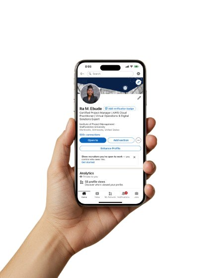
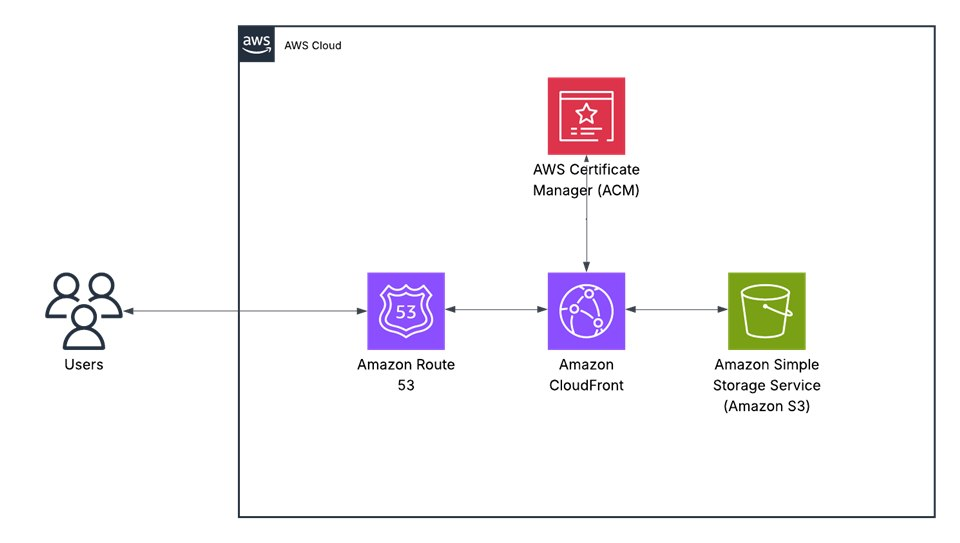
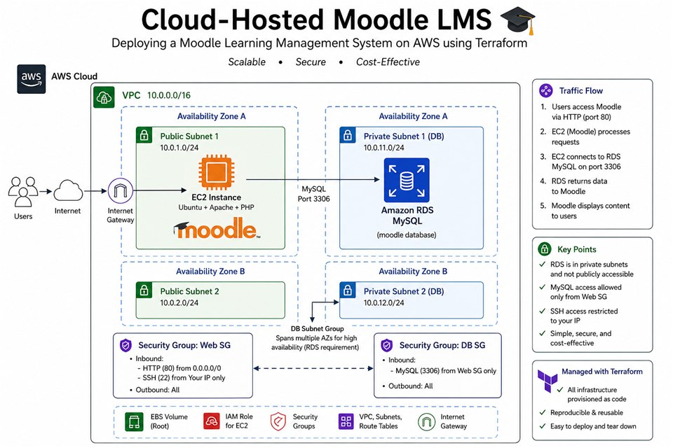

I build clouds that don’t rain — they scale
I used to think "living in the clouds" meant daydreaming. Turns out, it’s a career path. These days, I design scalable solutions - and occasionally my own life lessons - on AWS
AWS · Infrastructure as Code · Cloud Operations
Hello, I am
Building secure, scalable solutions on AWS.
Cloud professional focused on Cloud Engineering and Cloud Support roles.
Once upon a time, I taught people how to use computers. Now I teach computers how to work smarter - in the cloud. I’m Ita: project manager, AWS explorer, and believer that great architecture starts with great intention

I build clouds that don’t rain — they scale
I used to think "living in the clouds" meant daydreaming. Turns out, it’s a career path. These days, I design scalable solutions - and occasionally my own life lessons - on AWS

I am a lifelong learner with a passion for building systems that make life simpler, smarter, and more connected. My career began in education, where I spent seven years as an ICT instructor helping students understand the power of technology. That experience shaped my love for clarity, structure, and problem-solving — the same principles that guide me today as I design cloud solutions.
For the past few years, I’ve run my own business, Ita’s Virtual Solutions, offering project management, web development, and digital operations support for clients across different industries. Working remotely taught me how to balance technology with humanity — listening first, creating next, and always aiming for solutions that serve people, not just processes.
Now, I’m channeling my skills into AWS cloud architecture, combining my background in IT, teaching, and project management to build scalable, secure, and meaningful solutions. Whether it’s deploying applications, automating workflows, or crafting smarter systems in the cloud, my goal is simple: to keep learning, growing, and helping others do the same — one solution at a time.
Technical skills
AWS Cloud Architecture and Deployment
Web Development and Hosting
Cloud Automation
Networking and Security (VPC, IAM)
Infrastructure as Code (IaC)
CI/CD and DevOps Tools
Professional skills
Project Management and Coordination
Analytical and Problem-Solving Skills
Communication and Collaboration
Client Relations and Stakeholder Management
Process Improvement and Efficiency
Adaptability and Continuous Learning

Static Website Hosting on AWS S3 with CloudFront and Route 53
This project demonstrates the delivery of a static website using key AWS services for scalability, security, and cost efficiency. The website’s HTML, CSS, and JavaScript files are stored in an Amazon S3 bucket, configured for static website hosting.
To ensure fast global delivery and HTTPS security, Amazon CloudFront serves as a content delivery network (CDN), caching content closer to users. A custom domain managed through Amazon Route 53 provides reliable DNS routing and domain name management.

Cloud-hosted Moodle LMS
I designed and deployed a cloud-hosted Moodle Learning Management System (LMS) on AWS using Terraform. The project demonstrates how an educational institution or training organization can host an online learning platform in the cloud while separating the application and database layers and applying secure AWS networking practices.